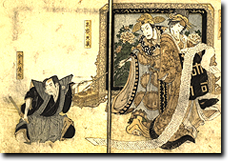

|
In particular, Kabuki Heroes brings to life the phenomenal rivalry between two superstar actors - Rikan (Arashi Kichisaburô II, 1769-1821) and Shikan (Nakamura Utaemon III, 1778-1838).
These men dominated Osaka Kabuki, artistically and commercially, from about 1805 until Rikan’s death in 1821. An extraordinary series of written exchanges survives, and the 'merchandise' on display, which popularised both the men and their rivalry, sheds light on two very different approaches to Kabuki. |